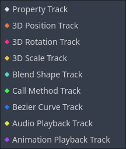
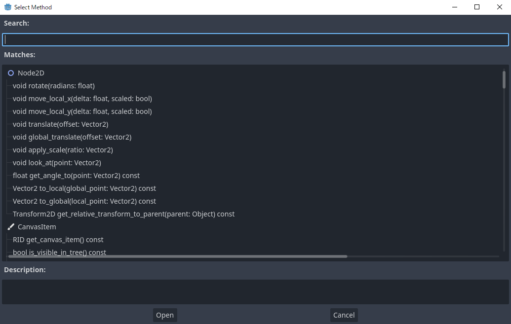
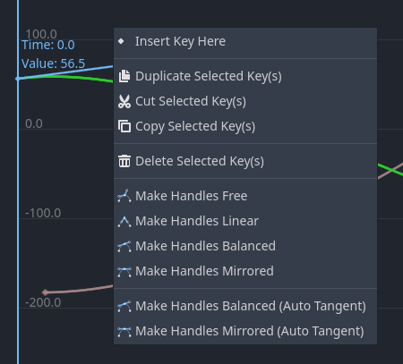

Các loại track hoạt ảnh
Trang này giới thiệu tổng quan về các loại track có sẵn cho node animation player của Godot, ngoài các property track mặc định.
Xem thêm
Chúng tôi giả định bạn đã đọc Giới thiệu về các tính năng hoạt ảnh, bài này trình bày những kiến thức cơ bản, bao gồm cả property track.

Property Track
Loại track cơ bản nhất. Xem Giới thiệu về các tính năng hoạt ảnh.
Position 3D / Rotation 3D / Scale 3D Track
Các track biến đổi 3D này điều khiển vị trí, góc xoay và tỷ lệ của một đối tượng 3D. Chúng giúp tạo hoạt ảnh cho transform của đối tượng 3D dễ dàng hơn so với dùng property track thông thường.
Loại track này được thiết kế cho các hoạt ảnh được import từ mô hình 3D bên ngoài và có thể giảm dung lượng resource nhờ nén.
Blend Shape Track
Blend shape track được tối ưu hóa để tạo hoạt ảnh cho blend shape trong MeshInstance3D.
Loại track này được thiết kế cho các hoạt ảnh được import từ mô hình 3D bên ngoài và có thể giảm dung lượng resource nhờ nén.
Call Method Track
Call method track cho phép bạn gọi một hàm vào một thời điểm chính xác từ bên trong hoạt ảnh. Ví dụ: bạn có thể gọi queue_free() để xóa một node ở cuối hoạt ảnh chết.
Ghi chú
Vì lý do an toàn, các sự kiện đặt trên call method track sẽ không được thực thi khi xem trước hoạt ảnh trong trình chỉnh sửa.
Để tạo loại track này trong trình chỉnh sửa, nhấp "Add Track -> Call Method Track." Khi đó, một cửa sổ sẽ mở ra cho phép bạn chọn node liên kết với track. Để gọi một phương thức của node, nhấp chuột phải vào dòng thời gian và chọn "Insert Key". Một cửa sổ mở ra với danh sách các phương thức có sẵn. Nhấp đúp vào một phương thức để hoàn tất việc tạo keyframe.

Để thay đổi lời gọi phương thức hoặc các đối số của nó, nhấp vào key và chuyển sang inspector dock. Tại đó, bạn có thể thay đổi phương thức cần gọi. Nếu mở rộng mục "Args", bạn sẽ thấy danh sách các đối số có thể chỉnh sửa.

Để tạo loại track này bằng code, hãy truyền một dictionary chứa tên và tham số của phương thức đích làm Variant cho key trong Animation.track_insert_key(). Các khóa và giá trị mong đợi như sau:
Khóa |
Giá trị |
|---|---|
|
Tên của phương thức dưới dạng |
|
Các đối số truyền vào hàm dưới dạng |
# Create a call method track.
func create_method_animation_track():
# Get or create the animation the target method will be called from.
var animation = $AnimationPlayer.get_animation("idle")
# Get or create the target method's animation track.
var track_index = animation.add_track(Animation.TYPE_METHOD)
# Make the arguments for the target method jump().
var jump_velocity = -400.0
var multiplier = randf_range(.8, 1.2)
# Get or create a dictionary with the target method's name and arguments.
var method_dictionary = {
"method": "jump",
"args": [jump_velocity, multiplier],
}
# Set scene-tree path to node with target method.
animation.track_set_path(track_index, ".")
# Add the dictionary as the animation method track's key.
animation.track_insert_key(track_index, 0.6, method_dictionary, 0)
# The target method that will be called from the animation.
func jump(jump_velocity, multiplier):
velocity.y = jump_velocity * multiplier
// Create a call method track.
public void CreateAnimationTrack()
{
// Get reference to the AnimationPlayer.
var animationPlayer = GetNode<AnimationPlayer>("AnimationPlayer");
// Get or create the animation the target method will be called from.
var animation = animationPlayer.GetAnimation("idle");
// Get or create the target method's animation track.
var trackIndex = animation.AddTrack(Animation.TrackType.Method);
// Make the arguments for the target method Jump().
var jumpVelocity = -400.0;
var multiplier = GD.RandRange(.8, 1.2);
// Get or create a dictionary with the target method's name and arguments.
var methodDictionary = new Godot.Collections.Dictionary
{
{ "method", MethodName.Jump },
{ "args", new Godot.Collections.Array { jumpVelocity, multiplier } }
};
// Set scene-tree path to node with target method.
animation.TrackSetPath(trackIndex, ".");
// Add the dictionary as the animation method track's key.
animation.TrackInsertKey(trackIndex, 0.6, methodDictionary, 0);
}
// The target method that will be called from the animation.
private void Jump(float jumpVelocity, float multiplier)
{
Velocity = new Vector2(Velocity.X, jumpVelocity * multiplier);
}
Bezier Curve Track
Bezier curve track tương tự property track, ngoại trừ việc nó cho phép bạn tạo hoạt ảnh cho giá trị của một thuộc tính bằng đường cong bezier.
Ghi chú
Bezier curve track và property track không thể được trộn (blend) trong AnimationPlayer và AnimationTree.
Để tạo track này, nhấp "Add Track -> Bezier Curve Track". Giống như với property track, bạn cần chọn một node và một thuộc tính để tạo hoạt ảnh. Để mở trình chỉnh sửa đường cong bezier, nhấp vào biểu tượng đường cong ở bên phải animation track.
Trong trình chỉnh sửa, các key được biểu diễn bằng hình thoi tô đặc, còn các hình thoi rỗng được nối với chúng bằng một đường thẳng sẽ điều khiển hình dạng đường cong.
Mẹo
Để làm việc thủ công với đường cong chính xác hơn, bạn có thể muốn thay đổi mức thu phóng của trình chỉnh sửa. Thanh trượt ở góc dưới bên phải trình chỉnh sửa có thể dùng để phóng to và thu nhỏ trên trục thời gian, bạn cũng có thể làm vậy bằng Ctrl + Shift + Mouse wheel. Dùng Ctrl + Alt + Mouse wheel sẽ phóng to và thu nhỏ trên trục Y

Khi đang chọn một keyframe (không phải tay nắm), trong bảng chuột phải của trình chỉnh sửa, bạn có thể chọn chế độ tay nắm:
Free: Cho phép bạn định hướng một tay nắm theo bất kỳ hướng nào mà không ảnh hưởng đến vị trí của tay nắm còn lại.
Linear: Không cho phép xoay tay nắm và vẽ đồ thị tuyến tính.
Balanced: Khiến các tay nắm xoay cùng nhau, nhưng khoảng cách giữa key và một tay nắm không được đối xứng.
Mirrored: Khiến vị trí của một tay nắm đối xứng hoàn toàn với tay nắm kia, kể cả khoảng cách của chúng đến key.

Audio Playback Track
Nếu bạn muốn tạo hoạt ảnh có âm thanh, bạn cần tạo một audio playback track. Để tạo track này, scene của bạn phải có một node AudioStreamPlayer, AudioStreamPlayer2D hoặc AudioStreamPlayer3D. Khi tạo track, bạn phải chọn một trong các node đó.
Để phát một âm thanh trong hoạt ảnh, kéo và thả một tệp âm thanh từ FileSystem dock vào animation track. Bạn sẽ thấy dạng sóng của tệp âm thanh hiển thị trong track.

Để xóa một âm thanh khỏi hoạt ảnh, bạn có thể nhấp chuột phải vào nó và chọn "Delete Key(s)" hoặc nhấp vào nó rồi nhấn phím Del.
Chế độ blend cho phép bạn chọn có điều chỉnh âm lượng âm thanh khi trộn trong AnimationTree hay không.

Animation Playback Track
Animation playback track cho phép bạn sắp xếp trình tự hoạt ảnh của các node animation player khác trong scene. Ví dụ: bạn có thể dùng nó để tạo hoạt ảnh cho nhiều nhân vật trong một đoạn cắt cảnh (cut-scene).
Để tạo animation playback track, chọn "New Track -> Animation Playback Track."
Sau đó, chọn animation player bạn muốn liên kết với track.
Để thêm một hoạt ảnh vào track, nhấp chuột phải vào track và chèn một key. Chọn key vừa tạo để chọn hoạt ảnh trong inspector dock.

Nếu một hoạt ảnh đang phát và bạn muốn dừng nó sớm, bạn có thể tạo một key và đặt nó thành [STOP] trong inspector.
Ghi chú
Nếu bạn đã tạo instance một scene chứa animation player vào scene của mình, bạn cần bật "Editable Children" trong cây scene để truy cập animation player của nó. Ngoài ra, một animation player không thể tham chiếu đến chính nó.